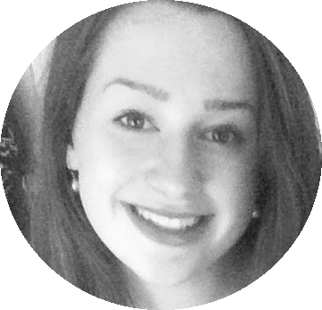
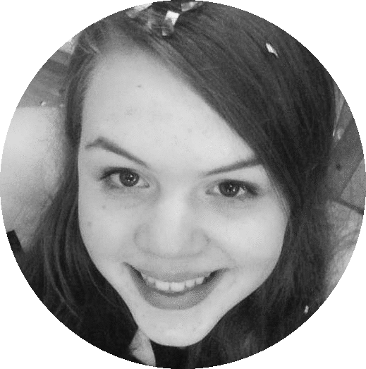
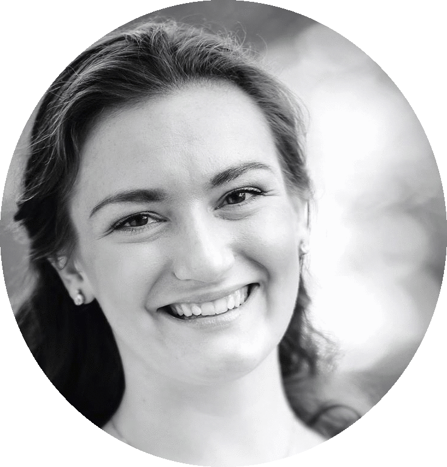

Gruppen består av tre jenter som studerer informatikk på tredje året ved NTNU. Margit Schefte, Jodel-baronen fra Molde, Trine-Lise den aktive og liberale fra Lillesand og Silje Sævig, den energiske og kreative sjelen fra Bergen. Sammen skal vi redde verden litt, slik som Line Nelvik på NRK.
  Vi har bestemt oss for å ha en fiktiv klient, og kaller ham for "Desperate Dan". Desperate Dan er på jakt etter ekte kjærlighet i kjærlighetsbyen Trondheim. Dette skal gruppen hjelpe både ham og andre med.
Vi skal få tildelt en egen prosjektrådgiver som skal hjelpe oss med prosessen i prosjektet. Vi har enda ikke fått tildelt noen, og venter i spenning på hvem den heldige vinneren er.